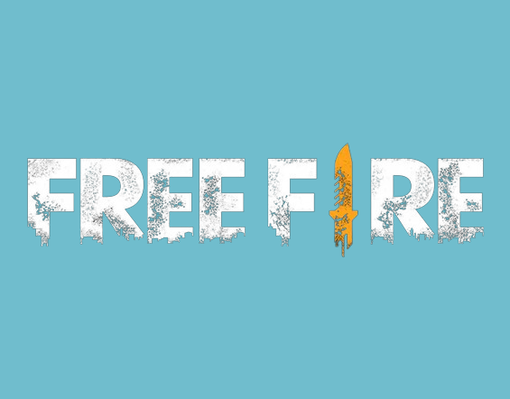

Overview
Free Fire is a popular battle royale game where players compete to be the last person standing on a shrinking battlefield. Featuring fast-paced gameplay and intense combat, it offers a range of characters, weapons, and strategies. The game is known for its short matches, strategic depth, and vibrant graphics, making it a favorite among mobile gamers.
Gameplay
Fast-Paced Action
Free Fire delivers quick, intense matches that last around 10 minutes, ideal for on-the-go gaming. Players parachute onto an island, scavenge for gear, and battle opponents until only one remains.
Diverse Characters and Skills
The game features a range of characters, each with unique abilities that can be strategically used to gain an edge over opponents. This diversity adds layers of strategy and personalization to each match.
Weapons and Equipment
Free Fire offers a wide array of weapons and equipment, from assault rifles to grenades. Players must adapt their strategies based on the gear they find and the situation they face.
Graphics
Vibrant and Dynamic
The game features colorful, detailed graphics that enhance the fast-paced action. The visual style is designed to be engaging and immersive, bringing the chaotic battlefield to life.
Multiplayer
Team and Solo Modes
Free Fire supports both solo and team-based gameplay, allowing players to choose between battling alone or teaming up with friends. This flexibility caters to different playstyles and preferences.
Ranked Matches
The game includes ranked modes that let players compete in a competitive environment, aiming to climb the ranks and showcase their skills against other top players.
Community and Updates
Active Community
Free Fire boasts a large and active community, with frequent events and tournaments that engage players and foster a competitive spirit. The community's enthusiasm helps drive ongoing development and updates.
Regular Updates
The game regularly receives updates that introduce new content, balance changes, and features. These updates keep the gameplay fresh and ensure that players have new challenges to tackle.
Reception
Popularity
Free Fire is highly popular in the mobile gaming scene, praised for its accessibility, engaging gameplay, and frequent updates. Its success is reflected in its large player base and numerous awards.
Player Experience
Players enjoy Free Fire for its thrilling, fast-paced combat and strategic depth. The game's blend of action and strategy provides a satisfying experience for a wide range of players.
Pros and Cons
- Quick Matches: The game's short match length is perfect for mobile gaming and quick sessions.
- Diverse Characters: Unique abilities and characters add strategic depth and personalization.
- Active Community: A vibrant player base and frequent updates keep the game dynamic and engaging.
- Performance Issues: The game can be demanding on some devices, potentially leading to performance problems.
- In-Game Purchases: Various microtransactions can be costly and impact the gameplay experience.
- Balance Issues: Some players may experience imbalances due to frequent updates and character adjustments.
Conclusion
In conclusion, Free Fire offers a fast-paced, engaging battle royale experience with a range of features that appeal to mobile gamers. Its dynamic gameplay, diverse characters, and active community make it a standout title in the genre.